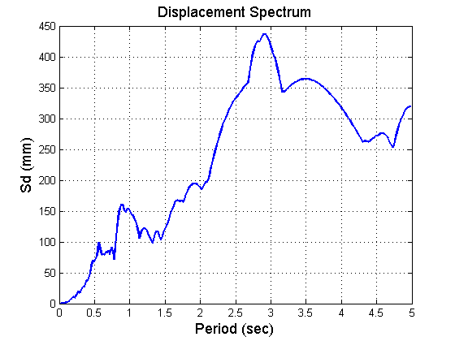
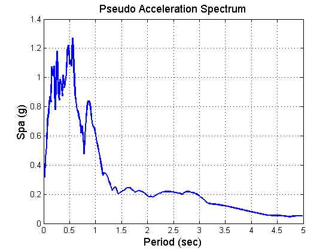

An Example to Use SPEC-Function to Generate Elastic Response Spectra
This is a function to generate elastic response specra including Displacement Spectrum, Pseudo Acceleration Spectrum and Pseudo Velocity Spectrum which are needed in "Response Spectrum Analysis" of Structures. In this function to solve "Equation of Motions" for different periods, Newmark Linear Method has been used.
Contents
@ Mostafa Tazarv, Carleton University, May 2011
Expample 1
clc; clear all load elcentro.dat % Load Record data, First Col. is time and second col. is Acce. in g g=9810; % mm/s^2 %load IWT007-1103111446-NS.txt %Ag=g*(IWT007_1103111446_NS(2:end,1)); Ag=g*elcentro(:,2); % Acceleration Vector dt=0.02; % Time Interval zet=2; % Damping Ratio endp=5; % End Period (s) of Spectra
Recall SPEC.m
[T,Spa,Spv,Sd]=SPEC(dt,Ag,zet,g,endp); 